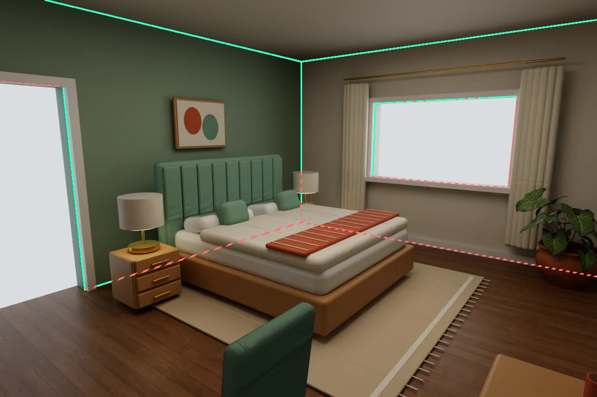
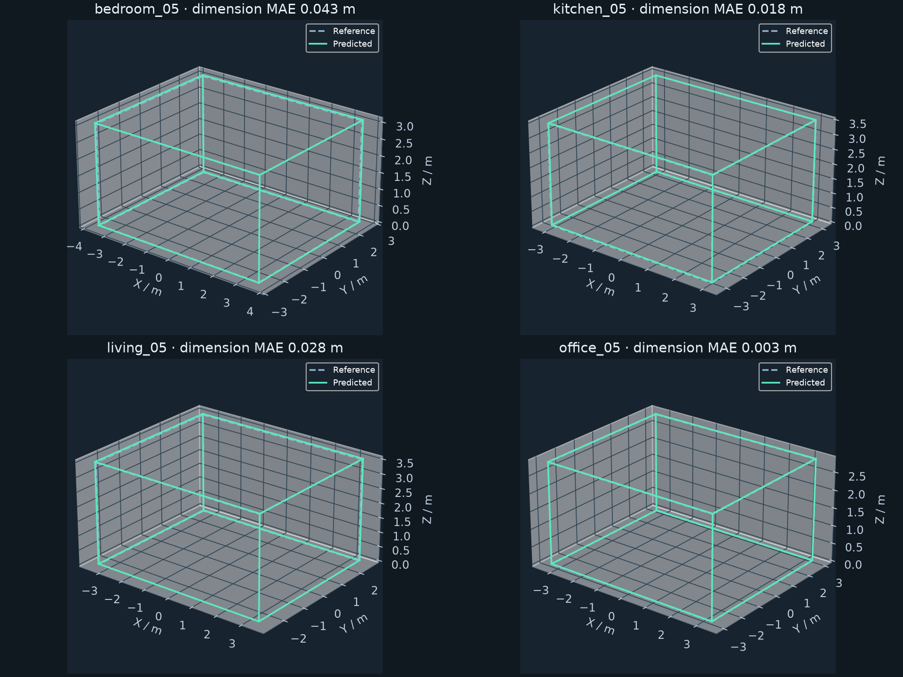
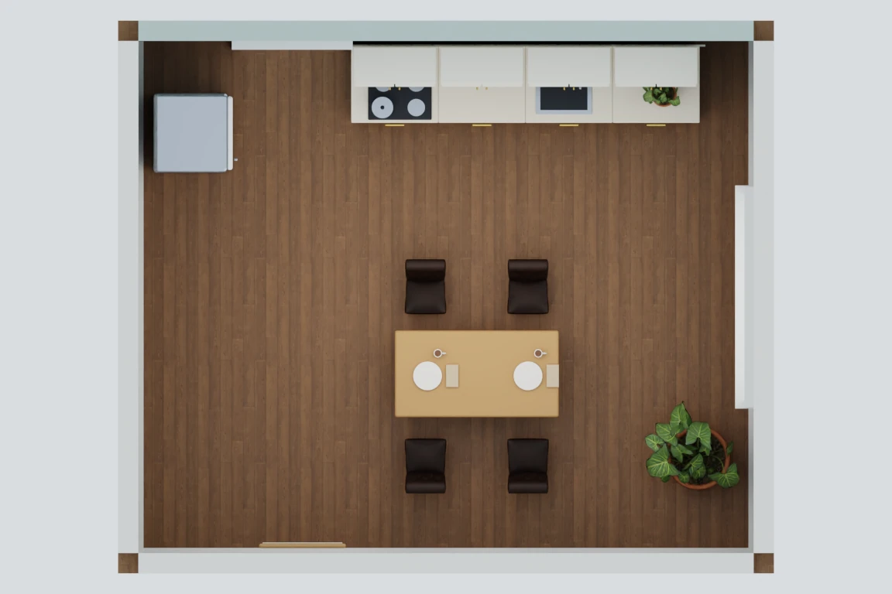
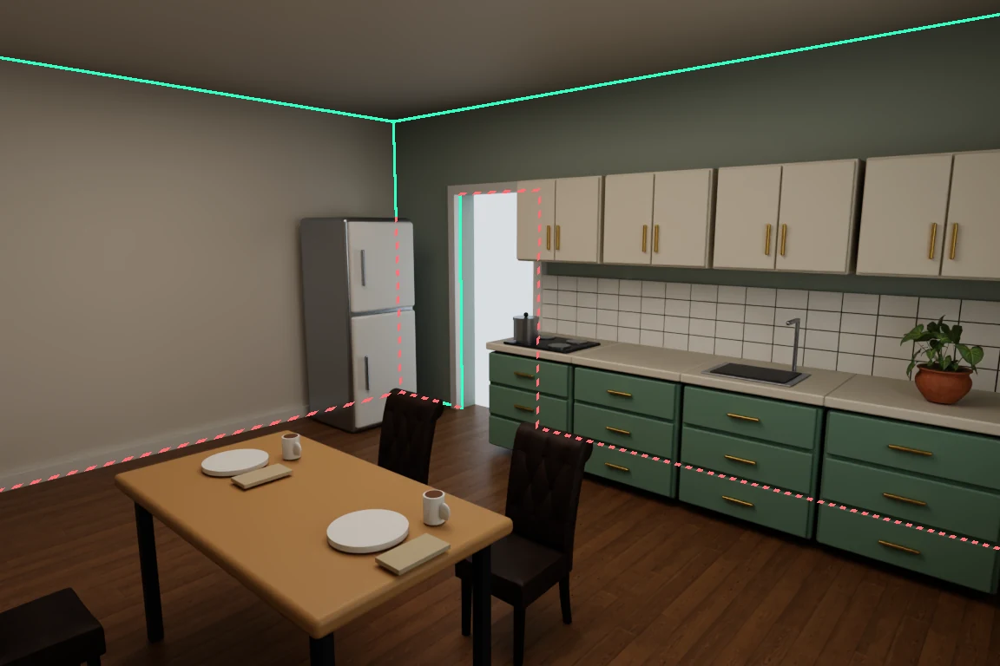
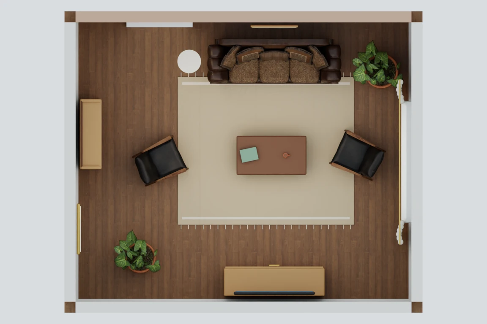
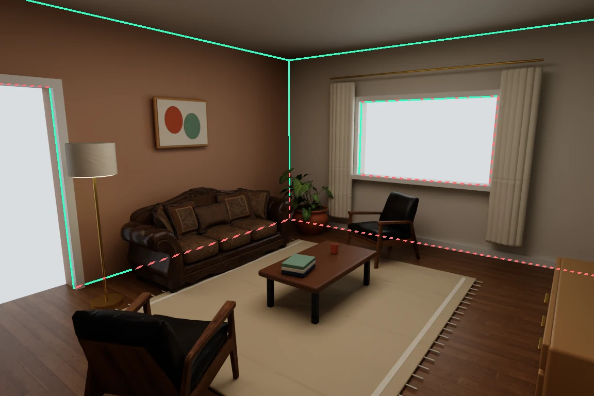
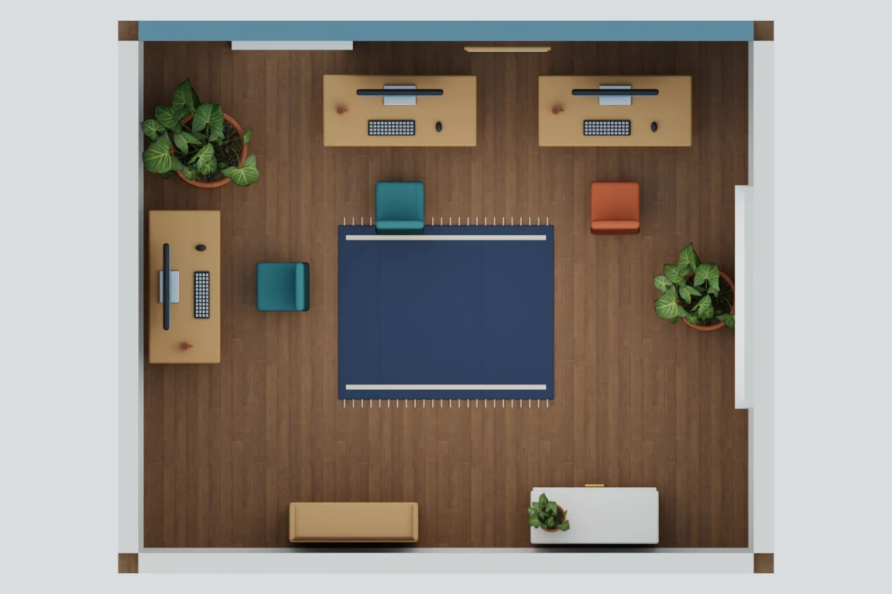
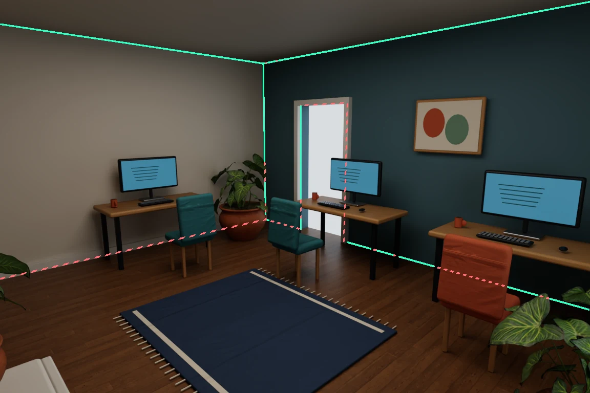

01 / SYNTHETIC DATA
Build the world and its labels
Furnished interiors in Isaac Sim, calibrated moving cameras, depth, and visible and occluded architectural-edge ground truth.

Explore furnished scenes and camera paths ↓ROOMGRAPH / DATA · PERCEPTION · EXPLORATION
Generate furnished indoor worlds, learn their structural edges, and explore connected spaces to build observed 3D maps. RoomGraph brings these experiments together in one project.
THE ROOMGRAPH PIPELINE
01 / SYNTHETIC DATA
Furnished interiors in Isaac Sim, calibrated moving cameras, depth, and visible and occluded architectural-edge ground truth.

Explore furnished scenes and camera paths ↓02 / HEAD-CAMERA PERCEPTION
Humanoid head-camera images with visible arms and mirror reflections. Learned edge predictions feed calibrated multi-view fitting of rectangular room shells.

Training, predictions and interactive 3D results →03 / CONNECTED SPACES
Active camera movement and exploration across four furnished development buildings, using acquired ideal RGB-D and known poses to accumulate partial observed maps.
 Camera replays, interactive maps and measurements →
Camera replays, interactive maps and measurements →The RGB-only room fitter assumes known poses and Manhattan axes. Connected-space mapping adds ideal depth; it does not establish complete building reconstruction or held-out real-world robustness.
Follow the progression through the active head-camera pilot and first connected building. The separate ARKitScenes project tests transfer to real RGB-D captures.
SYNTHETIC DATA / CAMERA GALLERY
01 / EXPLORE
Watch continuous camera walkthroughs, then inspect individual views. Each map tracks the camera’s position and viewing direction.
Mint and coral overlays are geometry-derived ground truth, not model predictions. Videos follow a continuous camera path; the inspection controls below step through eight separate calibrated views.
A bed, study desk, chair, dresser, bedside lamps, mirror, plants and textiles. 16 furnishing assemblies.
Continuous camera path · 96 rendered poses · 8-second loop · GIF version ↗
Cabinets, countertops, sink, cooker, fridge, dining table, chairs and kitchenware. 29 furnishing assemblies.
Continuous camera path · 96 rendered poses · 8-second loop · GIF version ↗


A sofa, lounge chairs, coffee table, media console, books, mirror and plants. 16 furnishing assemblies.
Continuous camera path · 96 rendered poses · 8-second loop · GIF version ↗


Three workstations, monitors, keyboards, chairs, bookshelves, storage and plants. 19 furnishing assemblies.
Continuous camera path · 96 rendered poses · 8-second loop · GIF version ↗


02 / FROM SCENE TO SUPERVISION
Versioned JSON specifies furniture recipes, asset overrides, camera positions and targets, lighting, and capture settings. A fixed 6 × 5 × 3 m shell provides wall, floor, ceiling, doorway, and window boundaries.
Procedural beds, desks, cabinets, lighting, and decor combine with textured furniture and plants. Isaac Sim 5.1.0 renders the scenes on NVIDIA DGX Spark with 128 path-tracing samples per pixel for the still gallery. The moving-camera clips use 768 × 512 captures at 32 samples per pixel.
Known 3D architectural edges are projected through each calibrated camera. A first-hit depth test separates visible structure in mint from hidden structure in dashed coral, even where furniture blocks the room boundary.
A sofa can hide a wall–floor boundary without changing the room’s shape. Keeping both full and visible edge labels makes that distinction explicit and provides supervision for future amodal structure prediction.
Furniture edges, texture boundaries, and reflected structure in mirrors are excluded. Visibility uses a 2.5 cm depth tolerance and has pixel-level approximations near silhouettes; it is a prototype annotation method.
03 / PROJECT STATUS
Native ARM64 rendering, four furnished scene configurations, eight views per scene, structural masks, calibrated exports, and local/public visualization galleries. Unit tests cover geometry, camera projection, visibility, deterministic scene expansion, and camera-map directions.
The initial empty-room experiment also checks rendered depth against analytic geometry. Explore the original calibration demo →
Connected rooms and larger building layouts; more diverse furniture and industrial assets; dataset splits by building; then an edge/corner model, training and evaluation, and multi-view reconstruction.
The current scenes share one room shell. No learned predictions or reconstruction accuracy results are presented, and real-image generalization remains to be evaluated.